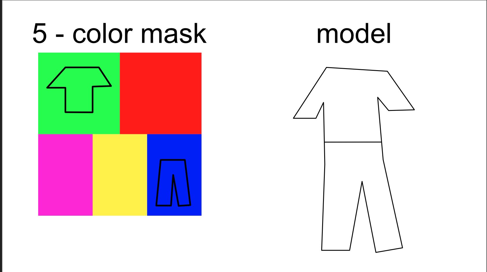
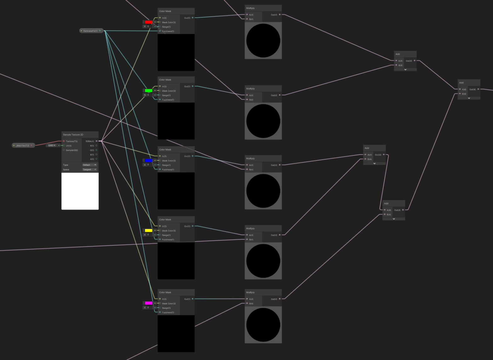
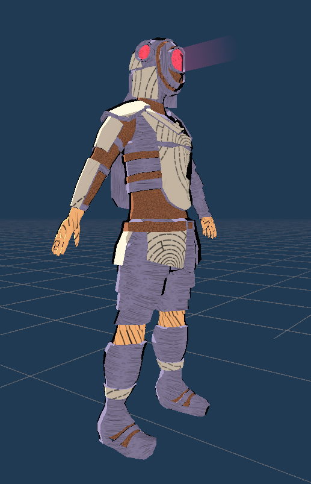
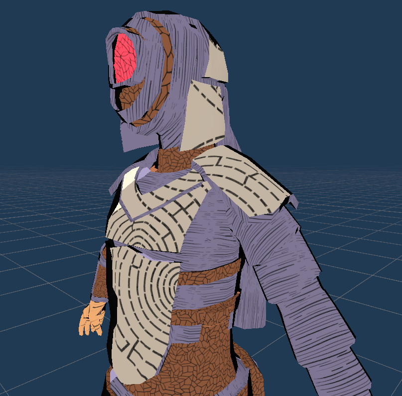

Gamedev log 4# - Short update!
I told you i will keep you posted!
Hi. Since my website is functional now and its connected to custom domain i feel the obligation to update more often. + I had a nice productive weekend. Appart from game development i have also created a discord bot that should keep you in touch if you joined my discord server. It should send a message anytime i create a new blog post, so basically you can setup notifications for the channel “Blog” and it will notify you directly :)
Back to the gamedev
Anyways. Last week i have told you that i have created a very smart system of UV wrapping.
Well… not really. I have to remake it all again. Luckily its not so problematic now.
I have realised that i need more then RGB mask. I need custom number of masked colors.
Which is what i have created this weekend. Sadly this means i also need to remake the UV wraps
for my characters.
That is also not the only problem. I have realised that even though i have minified the
amount of needed textures for the game i can do it even better. I can even simplify it to use
only 1 texture for all objects in the game basically. (well maybe not for the lightmaps, but
that is problem of future me.)
So look at this basic scatch of my plans. On the first image you can see the textures which
is divided into 5 colors (maybe i will add more?). Basically i can unwrap any model into this
texture and just move the parts i want to be colored into the pool of desired color.
The Unity shader will do the rest (you can see it on the second image). It will basically just
mask the colors with my materials setups which are all combined in one master material.
The problem with lightmaps can be real if i will not pay attantion and place uv wraps of the
same model on the top of each other in the color pool. That way the lightmaps will be confused.
But Harry told me that i can either just put the wrappings next to each other or i can just
use another wrapping for the ligtmapping. I think i will just do the first option even though
it will be a little more time consuming in the process but will safe a lot of time in the long run.

Here you can see how i adjusted the color masking.

New armor
Other that i have also been working on new plate armor for imperials. This will be basic
armor with little technical improvements like air filtering, flashlight in helm and eye
protection. Nothing fancy in the world. Every imperial should have this armor given by the
Empire. This will also be lately combined with backpacks, cloaks and probably halberts as a
two handed weapons.
The problem is that i have to remake the UV ofc… because i have realised the problem with the
simplyfied textures after i already had the new armor :) Well… here you can see the new armor
and i will let you be the judge of it. You can freely talk about this blog arcticle on my Discord.


Follow me on my socials to get more information about the game development. Thank you.